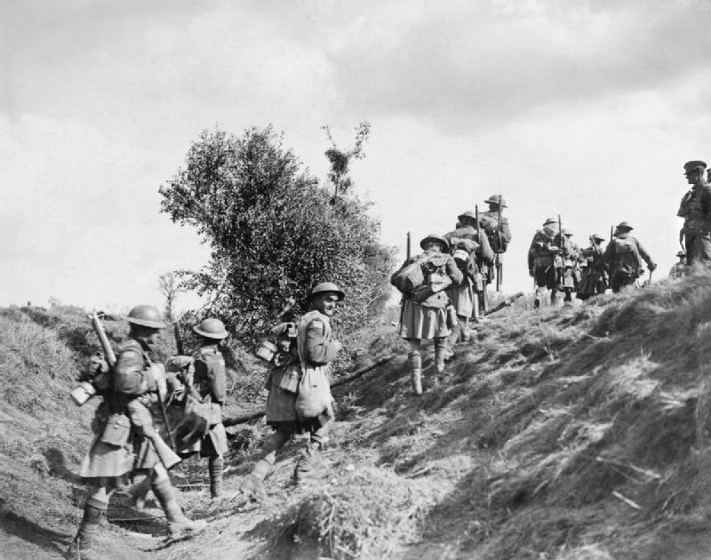
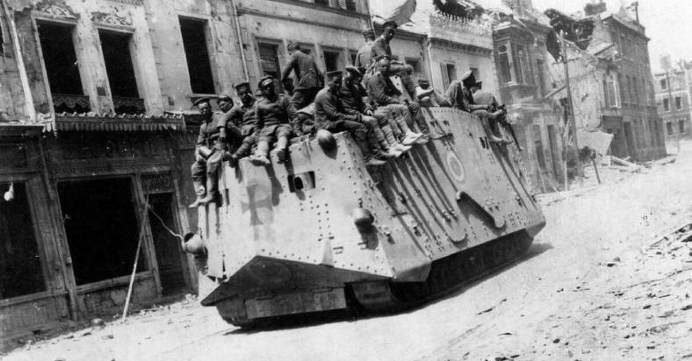

 Though most of World War I would be fought in Land and Air, there was another type of war being fought in the seas. The larger British Fleet was able to blockade Germany from oversea resources and trade. Only two major attempts were made by the Germans to break the blockade. The battle of Dogger Bay would occur on January 24, 1915. Due to superior intelligence, the British were able to prepare in advance for the German raid. Caught by surprise, the German fleet retreated with one cruiser sunk. While the Germans lacked a stronger navy, the did have another tactic, by using their advanced submarines. U-boats were used to destroy military ships, but in 1915, Germany announced unrestricted submarine warfare. Before this German U-boats needed to surface and check non military boats, but now with this shot without warning. On May 7th The RMS Lusitania was torpedoed and destroyed where 1,198 civilians died. This event would cause the United States to pressure Germany to stop unrestricted warfare, this effort would resume in 1917. The Lusitania was considered an auxiliary war ship and had over 4 million rifle rounds on board, which was the German’s reasoning for destroying it.
The British navy would also do something important in their naval campaign, they would tap and cut Germany’s transatlantic cable to America. Which allowed only British positive news to reach the Americas, but also allowed Britain to intercept messages which would be useful later in the war at getting the United States into the war.